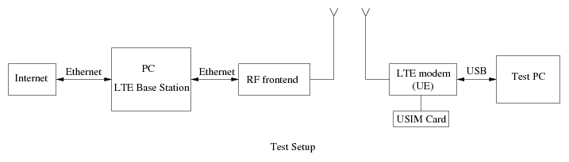

LTE/NR Base Station Software
Introduction
LTEENB
allows to build a
real 4G
LTE/5G NR base
station (called an eNodeB (4G) or gNodeB (5G)) using
a standard PC and a low cost software radio frontend. All the physical
layer and protocol layer processing is done in real time inside the
PC, so no dedicated hardware is
necessary. NB-IoT
and Cat-M1 devices are also supported. The software is now developped
and distributed by Amarisoft.
LTEENB is provided with a complete Evolved Packet Core (EPC) so that
it can work without an existing LTE network behind it. In short, it is
possible to use it like a Wifi access point. The EPC contains the
following programs:
- LTEMME is an MME including the HSS, SGW and PGW.
- LTEIMS is an IMS server providing voice (VoLTE) and SMS support.
- LTEMBMSGW is an MBMS gateway.
Example configuration

Potential use
- Low cost LTE/NR network simulator. Since everything runs on a PC, it is
very easy to add and test new LTE or NR features.
- Educational purposes. Configuring and running a base station is a
way to learn many details of LTE/NR.
- Low cost LTE/NR network infrastructure for private or public
networks.
Availability
The LTE/NR eNodeB/gNodeB software
is commercialized by Amarisoft.
A UE simulator is
now available. It simulates hundreds of terminals sharing the same
antenna. It uses the same hardware configuration as the LTE eNodeB.
An embebbed NB-IoT modem based on Amarisoft UE software.
References
Fabrice Bellard - https://bellard.org/